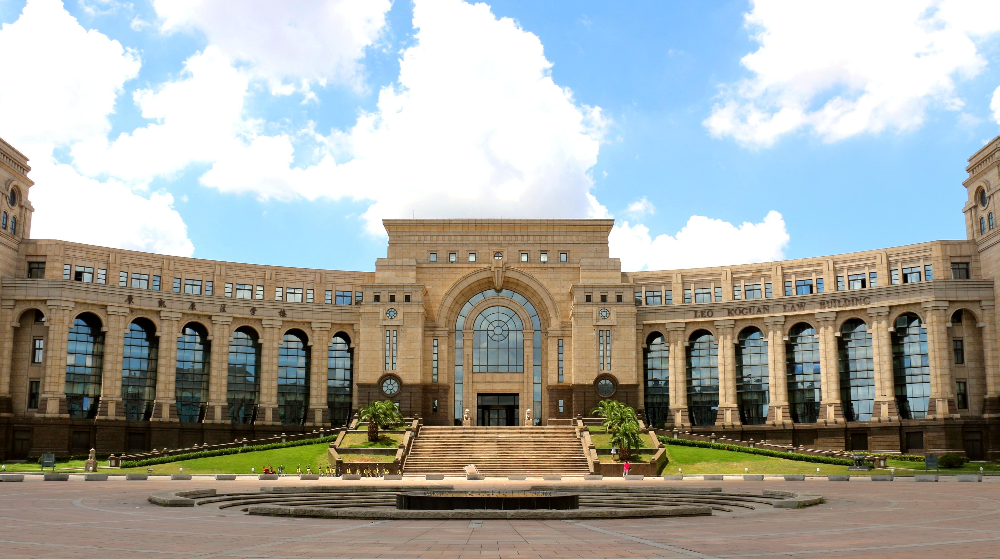
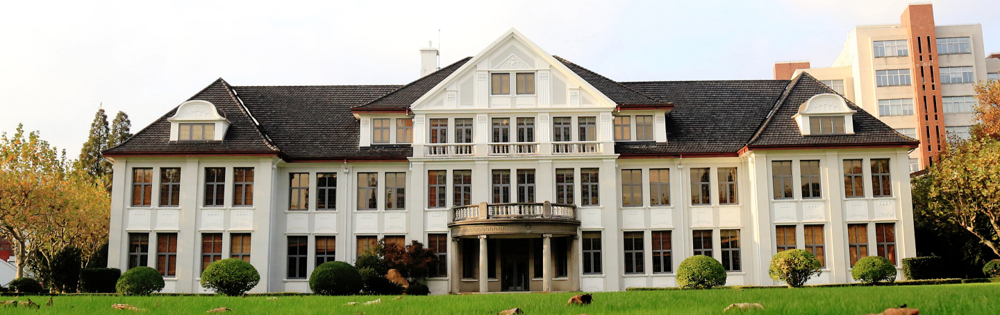
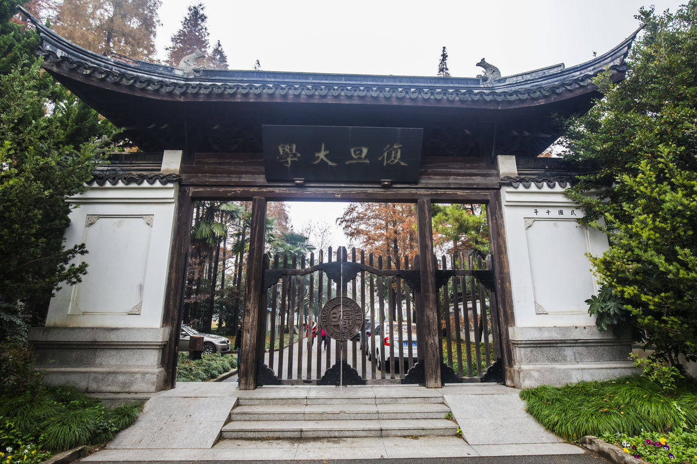
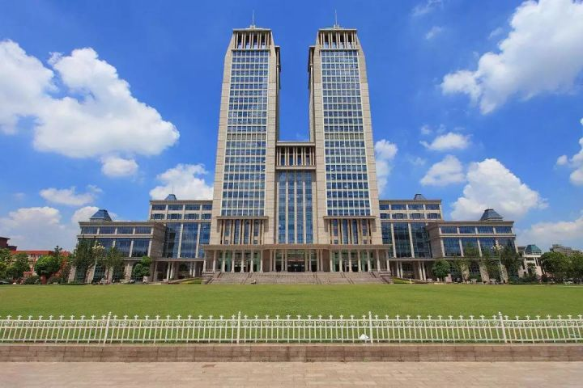
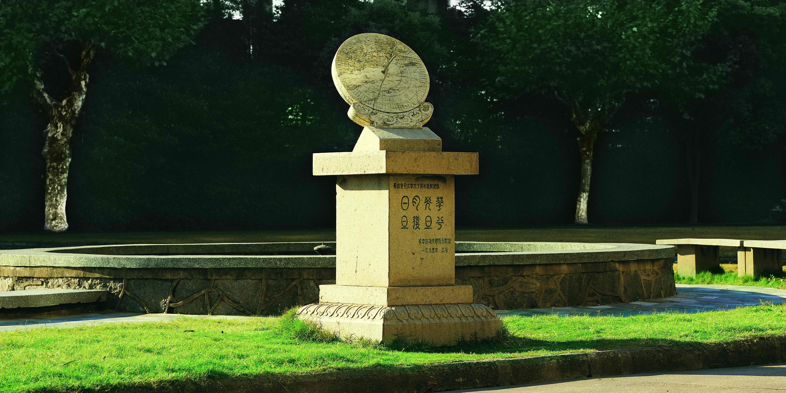
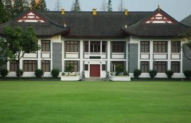
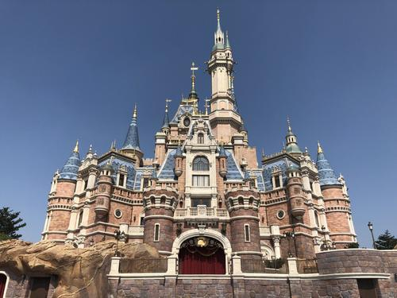
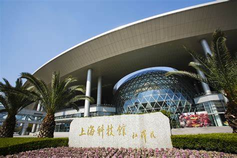

Traveling
SciSec 2021 is held by Fudan University.
About Fudan University. Fudan University was established in 1905 as Fudan Public School. It was the first institution of higher education to be founded by a Chinese person. The two characters, fù (“return”) and dàn (“dawn”) were borrowed from A Commentary on The Classic of History, of which the part on the Yu and the Xia dynasties mentions: “Brilliant are the sunshine and moonlight, again the morning radiance returns at dawn.” In 1917, the institution was renamed Fudan University, which has been kept ever since.
Motto Observance and Sincere Uprightness. Fudan upholds the spirit of patriotism, solidarity, service, and sacrifice. Its motto is scientia et studium, quaestio et cogitatio, which means rich in knowledge and tenacious of purposes, inquiring with earnestness and reflecting with self-practice. With a time-honored tradition of academic independence and free exploration, the University is distinguished by its academic character: “rectification of righteousness, illustration of virtue and indifference to honor and reward.”
     Fudan University
 Attractions in Shanghai